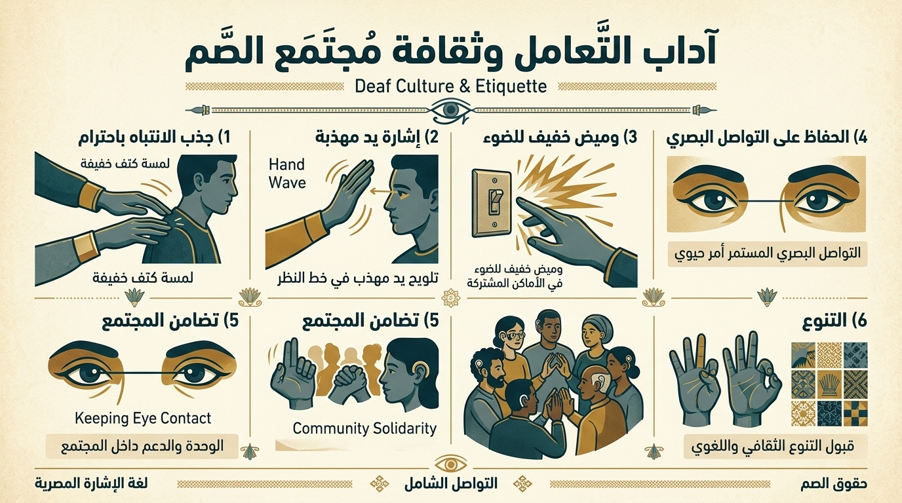

الوعي المجتمعي والأخلاقي
🤝 ثقافة الصم وآداب التعامل (Deaf Culture & Etiquette)
التواصل الإنساني مع مجتمع الصم يتجاوز مجرد حفظ الإشارات؛ إنه وعي بثقافة غنية وأعراف مجتمعية تبني جسوراً من الاحترام والتقدير المتبادل.

دليل آداب التواصل والاحترام المتبادل المعتمد مع مجتمع الصم وضعاف السمع في مصر
🎯 مواقف وتحديات تفاعلية (اختبر تصرفك)
اختر التصرف الأنسب في كل موقف واقعي للتأكد من فهمك لآداب التواصل مع الصم.